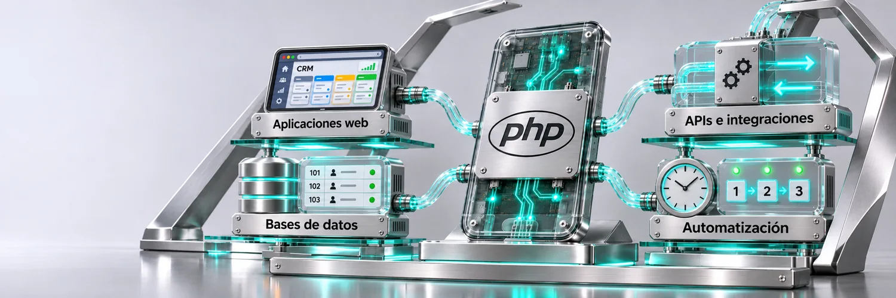
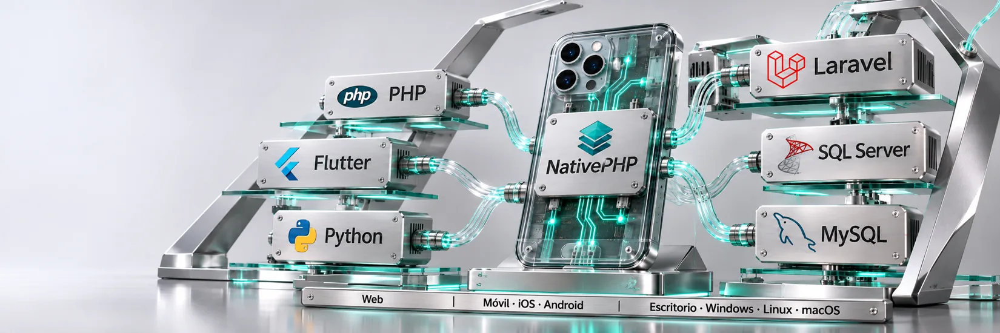
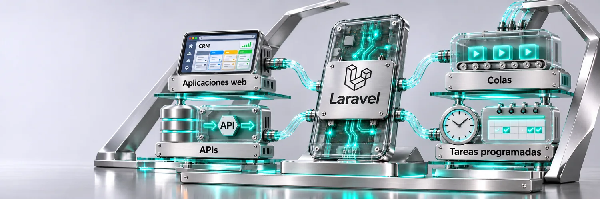
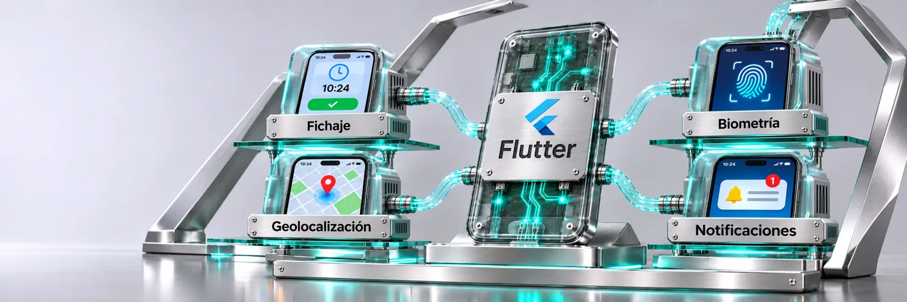
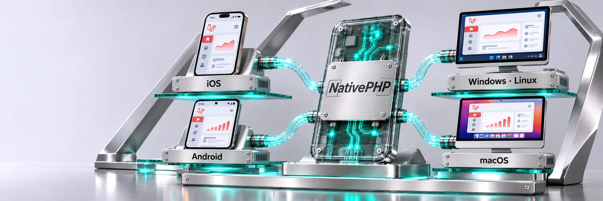
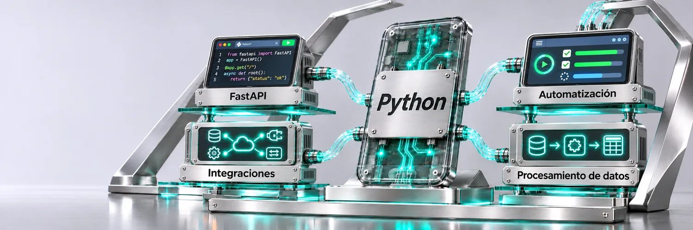
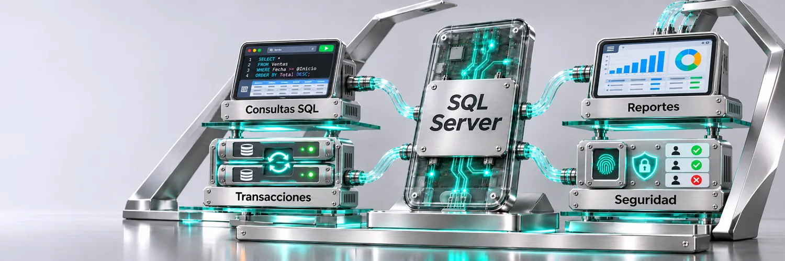
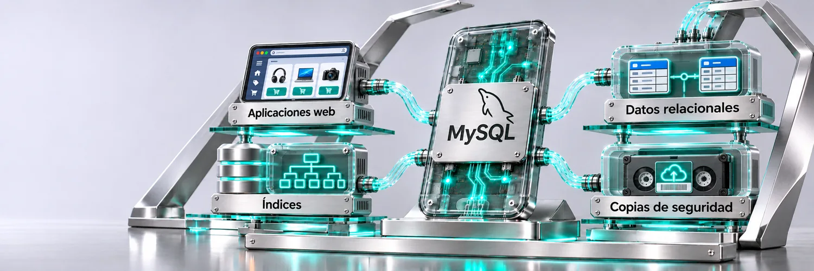

Aplicaciones de gestión, APIs y automatización.
La lógica de negocio conecta las pantallas con los datos y los procesos de cada sistema.

Soy Jorge Torres, desarrollador full stack PHP desde 2016. Coordino el desarrollo de sistemas en salud y construyo aplicaciones de gestión, integraciones y herramientas móviles.
Web · Móvil · Escritorio

La lógica de negocio conecta las pantallas con los datos y los procesos de cada sistema.

Uso Laravel y Livewire para desarrollar paneles, reportes y procesos automáticos.

Apps para iOS y Android con geolocalización, acceso biométrico y notificaciones.

Una vía para llevar interfaces de Laravel a iOS, Android, Windows, Linux y macOS.

Servicios para exponer datos, normalizar registros y automatizar tareas.

Modelado, consultas e integración de datos para sistemas de gestión.

Diseño de tablas, relaciones e índices para módulos de gestión.
También trabajo con Livewire, JavaScript, Tailwind, Alpine.js, Bootstrap, Vite, PWA, Git, Windows Server, IIS y Linux.
Mi fuerte es el diseño, la optimización y la integración de bases de datos. Sobre esa base desarrollo aplicaciones con Laravel y Livewire y uso Python para servicios e integraciones.
Me formé como Técnico Superior en Comunicaciones en Córdoba, Argentina.
Coordinador de Desarrollo de Sistemas · Sector salud
Planificación, prioridades y definición técnica del equipo, junto con desarrollo de sistemas.
Programador Full Stack PHP · Sector salud
Cofundador y desarrollador PHP · Heurística IT
Programador web independiente
Encontrame en LinkedIn o explorá mi perfil en GitHub.